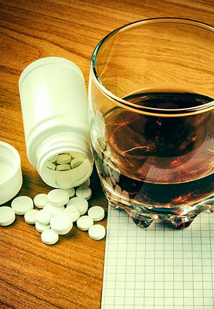

Содержание статьи:
Многие заболевания лечатся исключительно при помощи антибиотиков. Как правило, антибактериальная терапия довольно продолжительная и сопряжена с различными ограничениями. Одно из них касается употребления алкоголя. Однако не всегда люди могут и готовы во время лечения полностью менять свой образ жизни. В некоторых случаях отказаться от употребления спиртного невозможно. Как же быть, ведь антибиотики не рекомендуется смешивать с этанолом? Подобные эксперименты могут закончиться плачевно. Чтобы не навредить себе, надо сперва разобраться, какие препараты совместимы с алкоголем, а какие запрещены, и как их принимать.
Особенности антибиотиков
Антибиотики – это специальные лекарственные средства, которые активно борются с инфекциями бактериального происхождения. Они действуют на патогенные микроорганизмы подобно ядам, убивая их или лишая возможности размножаться. Антибиотики назначает только врач после бакпосева. Необходимо быть уверенным в том, что выбранное средство будет воздействовать на конкретный возбудитель заболевания. В противном случае терапия не принесет результата, к тому же, нарушит здоровую микрофлору в организме.
Также важно соблюдать ряд правил:
- Препарат начинает активно работать в течение 3 суток после приема первой таблетки. Если в этот период наметились улучшения (постепенно угасают симптомы болезни, снижается температура), прерывать лечение нельзя. Если положительных изменений нет, необходимо повторно проконсультироваться с врачом.
- Не все побочные эффекты - прямое показание для прекращения лечения выбранным средством. Иногда достаточно поменять дозировку.
- Самовольно уменьшать дозировку препарата нельзя, так как бактерии просто станут устойчивыми к нему.
- Принимать лекарство строго в определенное время, чтобы концентрация действующего вещества в организме была стабильной.
Внимание! У некоторых антибиотиков в сочетании со спиртным резко усиливается проявление побочных эффектов. Также усугубляется их вредное влияние на печень и ставится под сомнение эффективность лечения.
Антибиотики и алкоголь: последствия
При назначении антибактериальных препаратов отдельно оговаривается их совместимость со спиртными напитками. В одних случаях врач настоятельно не рекомендуется пить алкоголь во время лечения, а в других – спиртное не повредит, если соблюдать меры предосторожности.
Рекомендации лечащего врача будут зависеть от таких факторов:
- Группа антибиотика, который был назначен больному.
- Объем употребляемого алкоголя.
- Возраст пациента: он влияет на скорость обменных процессов в организме.
- Наличие хронических заболеваний (особенно внимание уделяется патологиям печени).
Только специалист может учесть все риски и дать пациенту верные рекомендации. В большинстве случаев крепкие напитки, вина несовместимы с антибактериальными препаратами. Есть и исключения, но их намного меньше.
Употребляя спиртное с антибиотиками, человек подвергает себя серьезным рискам. Вот самые опасные последствия для здоровья:
- Изменение метаболизма лекарств. Небольшое количество этанола организм человека вырабатывает самостоятельно, что является нормой. Когда же извне поступает лишний алкоголь, это дает дополнительную нагрузку на печень. В итоге орган вырабатывает специальные ферменты либо с избытком, либо в намного меньших количествах. В первом случае это приводит к резкому увеличению концентрации антибиотика в крови. Препарат становится токсичным, и начинают интенсивно проявляться его побочные действия. Во втором случае активные компоненты лекарства расщепляются слишком быстро, поэтому терапия оказывается бесполезной.
- Переход болезни в хроническую стадию. Антибиотик перестает работать в полную силу, поэтому болезнь начинает протекать скрытно. Внешние симптомы купируются, а вот их источник не убивается. Это довольно опасное состояние, при котором вынужденно увеличивается дозировка препарата, и принимать его придется намного дольше.
- Увеличение вязкости крови, что приводит к образованию тромбов, повышению риска инфаркта и инсульта.
- Появление тяжелых патологий печени. Сами по себе антибиотики негативно сказываются на работе печени, а в сочетании с этанолом нагрузка становится критической. У людей нередко развивается гепатит и острая печеночная недостаточность.
- Дисульфирам-подобная реакция. Антибиотики тормозят процесс распада этанола, в результате чего образуется большое количество ацетальдегида. В организме человека развивается такое же алкогольное отравление, как и в случае срыва кодирования дисульфирамом.
- Скачки артериального давления: оно может резко повышаться или, наоборот, снижаться.
- Снижения иммунитета. Алкоголь ослабляет защитные силы организма, усложняет усвоение лекарственного средства, а значит, воспалительный процесс будет только усиливаться.
- Аллергия. Она может протекать в легкой форме в виде кожных высыпаний и зуда. С этими симптомами необходимо срочно обращаться к врачу. В тяжелых случаях может развиться отек Квинке. Он затрагивает лицо, внутренние органы, оболочки головного мозга. Небольшая припухлость за короткий срок превращается в сильнейший отек, вызывающий удушье.
- Непредсказуемые реакции организма. Невозможно с полной уверенностью сказать, как именно отреагирует организм человека на сочетание алкоголя с тем или иным антибиотиком: у одного пациента побочные эффекты могут не проявиться, а для другого эксперимент со спиртным будет иметь плачевные последствия.
Не стоит рисковать своим здоровьем и бездумно употреблять алкоголь во время лечения. Если все же человеку необходимо выпить спиртное, предварительно обязательно нужно проконсультироваться с врачом.
Группы антибиотиков и реакция на алкоголь
Теперь необходимо более подробно рассмотреть, какие группы препаратов дают самые опасные осложнения при одновременном употреблении их со спиртными напитками.
- Амфениколы. Под воздействием этанола все побочные эффекты проявляются в разы острее.
- Тетрациклины. Сильно снижается эффективность препарата, развиваются тяжелые поражения печени.
- Фторхинолоны. В сочетании с алкоголем происходит угнетение центральной нервной системы, вплоть до состояния комы.
- Оксазолидиноны. Вызывают нервное возбуждение, обильное потоотделение, сбои сердечного ритма, повышение АД, судороги. В тяжелых случаях развивается кома.
- Линкозамиды. Провоцируют необратимые изменения в тканях печени, разрушают нервную систему.
- Макролиды. Из-за сбоев в обмене веществ концентрация антибиотиков в крови резко возрастает.
- Сульфаниламиды. Вместе с этанолом провоцируют нехватку фолиевой кислоты;
- Нитроимидазолы. Вызывают спазмы в животе, тошноту, покраснение кожных покровов, головные боли.
- Цефалоспорины. Провоцируют симптомы похмелья на фоне повышения концентрации уксусного альдегида.
Внимание! С перечисленными выше антибиотиками категорически запрещается употреблять алкоголь. Вся необходимая информация содержится в инструкциях к препаратам. Нарушение запрета может привести к сложным последствиям для здоровья, многие из которых окажутся необратимыми.
Некрепкое спиртное: безопасно ли оно?
С крепким алкоголем никакие лекарственные средства лучше не сочетать. Водка, виски, коньяк – в них содержится много этанола. На действие антибиотиков определенных групп спиртное может никак не повлиять, но это тоже спорное утверждение. Вопрос совместимости со спиртным остается открытым, ведь врачи не могут гарантировать, что у пациента не проявится непредсказуемая реакция. Чтобы терапия была результативной, лучше на время полностью отказаться от алкоголя.
Тоже правило касается и менее крепких напитков. Все знают о пользе белых и красных вин, однако при лечении медикаментами от них также надо отказаться. Больше всего вопросов вызывает употребление пива. Большинство считаются этот напиток безопасным, так как в нем содержится меньше всего этанола. Это так, но данный факт не дает гарантии, что побочные эффекты не проявятся.
Если в инструкции к препарату нет четкого запрета на совмещение с алкоголем, и человек не может избежать употребления спиртного, то лучше всего выпить небольшое количество напитка. В случае, когда антибиотик категорически не совместим с этанолом, то какой бы важной ни была встреча и как бы ни уговаривали друзья – пить нельзя. Ответственное отношение к своему здоровью позволит пройти курс лечения быстро, не затягивая его ненужными осложнениями.